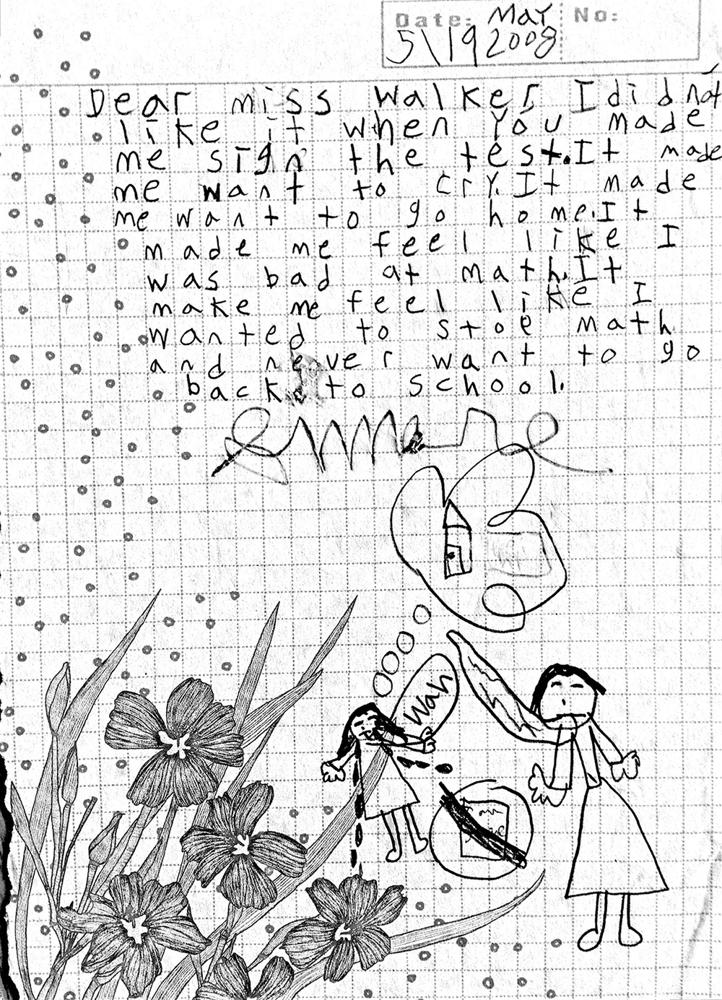

“Tienen cinco minutos, clase. Comiencen… ahora”.
Simone Mittelstaedt miró con pánico el papel que tenía enfrente. Tantas preguntas de multiplicación, (¡100 de ellas!) para resolver en tan poco tiempo. Sentía una sensación familiar de temor: el corazón se aceleraba, el estómago se contraía, el cerebro se congelaba. Esto le sucedía cada vez que su maestra le daba a la clase un examen de matemáticas. Esta vez, sin embargo, fue peor de lo habitual para Simone, una estudiante de segundo grado que había tenido dificultades en matemáticas durante tres años. Para ella los problemas que tenía enfrente eran como jeroglíficos. Simone no tenía idea de lo que se suponía que debía hacer.
Decidió que lo menos que podía hacer era completar todas las respuestas. Eso tenía que contar para algo. Cuando terminaron los cinco minutos y se entregaron las pruebas, Simone había completado todos los problemas. Aún así, cuando puso su lápiz en el escritorio, se sintió derrotada por el incomprensible remolino de números. Otra clase de matemáticas miserable. Simone había estado teniendo dificultades con las matemáticas por algún tiempo, pero ese jueves de abril por la tarde se unió a millones de seres humanos que en otras áreas son exitosos pero que han sido traumatizados por una prueba de matemáticas cronometrada.
La profesora de Stanford, Jo Boaler, informa sobre un vínculo definitivo entre las pruebas cronometradas y la ansiedad matemática, y dice que las pruebas cronometradas dañan las relaciones de los niños con las matemáticas. “Cuando sometemos a los estudiantes a esta experiencia que provoca ansiedad, hacemos que ya no les gusten las matemáticas”, dijo Boaler. Asustados y marcados por tal evento, las matemáticas para ellos se convierten en una palabra desagradable de once letras.
En los años siguientes, cuando llegaba el momento de las matemáticas, Simone sentía que la ansiedad se apoderaba de ella ante la perspectiva de la multiplicación, las fracciones o la división larga. Para escapar, solía pedir permiso para ir al baño y luego arrastraba los pies lentamente por el pasillo de la escuela tratando de evitar el papel lleno de números que le esperaba en su escritorio.
¡Hay tantas fobias para elegir!
La ansiedad matemática, también conocida como fobia a las matemáticas, es una reacción emocional negativa a una situación que requiere la resolución de problemas matemáticos. Si bien no se ha introducido en el DSM-5 (Manual Diagnóstico y Estadístico de Trastornos Mentales, Quinta Edición) como una enfermedad mental oficial, la ansiedad matemática afecta a millones de adultos y niños, cada uno de los cuales tiene su historia de horror sobre las matemáticas (gracias a un maestro inconsciente, un padre despistado o un concepto que nunca entendió). Según el profesor de Stanford, Vinod Menon, quien es coautor de un estudio sobre la base del neurodesarrollo de la ansiedad matemática, la parte del cerebro afectada por la ansiedad matemática es la misma parte “que responde a situaciones temerosas, como ver una araña o una serpiente”.
La mayoría de las veces aparece en los primeros años de la escuela primaria, y luego aumenta durante los años superiores de la escuela primaria. También en la escuela intermedia muchos niños, especialmente las niñas, caen en el abismo de las matemáticas. Para los niños que sufren de ansiedad matemática severa, las implicaciones son alarmantes. Los estudios muestran que las personas con ansiedad matemática se desempeñan peor en los exámenes, evitan los cursos de matemáticas de alto nivel y evitan seguir carreras relacionados con las matemáticas. Mientras tanto, los estudiantes de secundaria que toman con éxito clases de matemáticas a nivel superior tienen más probabilidades de graduarse de la universidad. También es probable que ganen más dinero.
La ansiedad matemática también es algo así como una epidemia estadounidense. De hecho, es tan común que es aceptable escuchar a los adultos que han ido a la universidad declarar abiertamente: “no soy una persona a quien se le faciliten las matemáticas” o “soy malo en matemáticas”, casi como si fuera un alarde. “Las matemáticas son la mayor debilidad de Estados Unidos en comparación con los países del mundo”, dice Amanda Ripley, autora del libro The Smartest Kids in the World. “Nuestros adolescentes ocupan el puesto 26 en matemáticas en el examen PISA (Programa para la Evaluación Internacional de Estudiantes), y el puesto 12 en lectura en el mismo examen. Incluso el 25 por ciento de los niños más ricos, que tienen padres altamente educados, computadoras en casa y escuelas lujosas, se encuentran en el puesto 18 a nivel mundial en las matemáticas en comparación con el 25 por ciento de los niños más ricos de otros países”.
Solo el 32 por ciento de los estudiantes de secundaria de Estados Unidos son competentes en matemáticas en la Evaluación Nacional del Progreso Educativo (NAEP, por sus siglas en inglés). Las tasas de competencia comparables en matemáticas son del 45 por ciento en Alemania, del 49 por ciento en Canadá y del 63 por ciento en Singapur (algo que era de esperarse). Es un problema educativo que Estados Unidos no puede permitir que siga sucediendo, dado que se proyecta que muchas carreras en el siglo XXI estarán enfocadas en la ciencia, la tecnología, la ingeniería y las matemáticas (en inglés a este conjunto de carreras se les llama STEM).
Confusión + miedo = ansiedad matemática
A pesar de que es un problema común nacional, y de los innumerables expertos, no hay una solución fácil para tratar la ansiedad matemática. La historia de Simone ofrece una idea de lo difícil que puede ser (tanto para los niños como para las familias) luchar contra el monstruo de la fobia a las matemáticas.
“Realmente lamento haber fallado en esta prueba, mami”, le explicó Simone a su madre esa tarde, mientras le entregaba el papel donde había contestado todo, pero con respuestas incorrectas. “Solo quería sacar una buena nota como todos los demás”.
Aunque la niña de 7 años había acertado al menos en un puñado de ecuaciones, la maestra escribió una X gigante en su trabajo, seguida del comentario: “Prueba rechazada. La próxima vez, haz un buen trabajo”, y debajo de esto agregó una línea en la que le exigió a Simone firmar con su nombre (algo que ella no quería hacer).
Las respuestas de Simone (4×3 = 43; 2×0 = 2; 5×5 = 5) dejaron claro que no estaba tratando de interpretar al payaso de la clase; ni siquiera había empezado a comprender la idea básica de la multiplicación, pero al menos estaba probando diferentes tácticas. Su confusión, sin embargo, no debería haberle sorprendido a la maestra ya que Simone había tenido dificultad con las matemáticas todo el año. (En primer grado, Simone estaba igual de desconcertada. “Estábamos haciendo estas cosas con formas, colores y cosas que no entendía”, dice Simone. “Mis maestros eran agradables en primer grado, pero no me lo explicaron bien”).
Indignados por el hecho de que la maestra no les había ayudado a aclarar en dónde se había equivocado su hija (y peor aún, la había ridiculizado por ello) los padres de Simone, Pia Hinckle y Chris Mittelstaedt, estaban dispuestos a intervenir.
Después de varias semanas difíciles, con el aliento de sus padres, Simone le escribió a su maestra una nota decorada en la parte inferior con una ilustración de una niña de quien brotaban muchas lágrimas: “Estimada señorita Walker, no me gustó cuando me hizo firmar el examen. Me dieron ganas de llorar. Me hizo querer ir a casa. Me hizo sentir que era mala en matemáticas. Me hizo sentir que ya no quería aprender matemáticas ni ir a la escuela. Simone”.

Esta es la carta que Simone le escribió a su maestra de segundo grado. (Haz clic para agrandarla).
Ahora, con 13 años de edad y en octavo grado, la adolescente de voz suave parece desconcertada, quizás incluso un poco avergonzada, de que su madre haya guardado la evidencia de este incidente matemático (las cartas que su madre le escribió al director y al superintendente, así como la prueba marcada con la X y la nota de Simone a su maestra). “No puedo creer que hayas guardado esto”, susurra ella. Sentada en su soleado comedor de San Francisco, Simone apenas recuerda la nota que escribió, pero los recuerdos de ese día perduran. “Mi maestra nos dijo: ‘Muy bien chicos, si todos aciertan en sus pruebas un 100 por ciento, entonces todos disfrutarán de helados’, así que estaba realmente emocionada porque me encanta el helado”.
Simone se entusiasma cuando habla sobre escritura y lectura, temas que siempre le han sido fáciles. Pero después del trauma de segundo grado, Pia recuerda, “el momento más dramático fue cuando dijo: ‘No soy buena en matemáticas’. En cierto modo, casi se sintió aliviada y dijo: ‘Ahora no tengo que intentarlo más’. Ella había renunciado a las matemáticas a los 7 años de edad”.
Pia, cuyo hijo mayor tiene problemas de aprendizaje, sabía por experiencia que no debía ignorar una crisis académica en desarrollo. “Es importante no perder el tiempo cuando son pequeños”, dice. Sobre todo porque con las matemáticas, un concepto generalmente se basa en otro: si uno se olvida de un concepto importante, es posible que se sienta cada vez más perdido a medida que transcurre cada año escolar.
Los padres de Simone le hicieron pruebas, pero ella no tenía discalculia (una incapacidad para “leer” los números, que afecta a un estimado de 3 a 6 por ciento de la población) como su hermano mayor. Aún así, ella necesitaba una terapia importante. “Se trataba de cambiar su actitud, porque estaba tan resignada con que era mala en matemáticas y nunca iba a ser buena en ello, así que ¿por qué dedicar tiempo y esfuerzo?”.
Para cuando comenzó el tercer grado, Simone estaba inscrita en Linda Mood Bell, una empresa privada de tutoría que ofrece terapia individual por una suma de aproximadamente $80 por hora. Luego, sus padres contrataron a una maestra de medio tiempo de la escuela de Simone para sesiones semanales. También le hicieron saber a la maestra de tercer grado de Simone que su brillante y curiosa hija se asustó al pensar en las matemáticas y necesitaba apoyo adicional. La maestra la apoyó, pero Simone se retrasó aún más. “Me estaban costando mucho las fracciones”, dice Simone. En la clase de su hermana gemela, aprendieron fracciones con los chocolates M&M’s. “Seguí pensando que quería estar en esa clase. No se trata solo de una recompensa, pero es más bien que deberían hacer que aprender sea divertido en lugar de que sea aburrido”, dice Simone.
Aun así, había tablas de multiplicar que no entendía (esas horribles tablas del nueve y el siete). “Todavía era la peor en matemáticas de la clase”, dice ella.
¿Cúal es la raíz del problema?
¿Por qué hay tantos niños petrificados por las matemáticas por sobre todas las demás materias, quienes al escuchar palabras como “entero” y “polígono” sienten ganas de salir corriendo? ¿Por qué no hay fobia a la historia natural o ansiedad generalizada sobre los estudios sociales?
Nadie sabe el momento exacto en que las matemáticas empezaron a aterrorizar a nuestra nación, pero las investigaciones han descubierto que este miedo social profundo a las matemáticas se transmite, aunque no genéticamente, de una generación a otra. De acuerdo con Elizabeth Gunderson, profesora asistente en el departamento de psicología de la Universidad de Temple quien ha investigado la ansiedad matemática, hay una “transferencia de adulto a niño” que ocurre, por lo general sin darse cuenta, por lo que la frase “las matemáticas son difíciles” es más una creencia religiosa que un engaño social.
Los expertos que han estudiado la ansiedad matemática dicen que el engaño social se basa en un mito peligroso de la educación estadounidense: o eres bueno en matemáticas o no. Es una aflicción extraña para los estadounidenses en particular, dada nuestra cultura de “¡puedo hacerlo!”. Aún así, la sabiduría común es que los que son afortunados nacen con un gen matemático. Eso deja al resto quienes son víctimas de una deficiencia matemática, a la deriva.
Según Sheila Tobias, autora del libro Overcoming Math Anxiety, a menos que un estudiante sufra una rara diferencia de aprendizaje, como la discalculia (una incapacidad para “leer” los números), cualquier niño puede ser bueno en matemáticas. Boaler está de acuerdo. Boaler dice que una de las primeras cosas que se debe hacer es cambiar la forma en que pensamos acerca de la fluidez matemática. Uno no necesita ser rápido o tener todo memorizado para aprender matemáticas y entender relaciones numéricas. Ella dice que muchos matemáticos no son calculadoras particularmente rápidas pero “piensan profundamente y con cuidado sobre las matemáticas”.
Tobias alienta a los padres a proceder con cautela con un niño que le tiene fobia a las matemáticas. “Si tu hijo dice: ‘Soy malo en matemáticas'”, dice Tobias, “la mejor manera de responder es con una afirmación objetiva: ‘no puedes ser malo en matemáticas porque eres muy bueno en el tenis, y puedes calcular cuándo estará la pelota en tu lado de la cancha’… Puedes vincular las matemáticas con cualquier cosa que tu hijo haga bien”.
Gran parte del mensaje negativo sobre las matemáticas es difundido por los maestros, dice el autor del libro Smartest Kids in the World, Ripley. Tendemos a reclutar muchos maestros, especialmente maestros de escuelas primarias, que sufren de fobia matemática. ¿Por qué es esto? Ese es el misterio que permanece. Pero puede deberse en parte a que muchas de nuestras más de 1,000 universidades de capacitación de maestros tienen estándares académicos muy bajos en comparación con los países con mejor desempeño. No necesitas tener buenas calificaciones en matemáticas para convertirte en maestro. Y muchos maestros, quienes se especializaron en educación u obtuvieron una licenciatura en artes del lenguaje, son los que “evitan las matemáticas”. Más de la mitad de ellos nunca tomaron matemáticas a nivel universitario.
Las implicaciones son desfavorables. Ripley cita un estudio realizado en el 2010 por el Centro para la Investigación en Matemáticas y Ciencias de la Educación: “Los futuros maestros en Estados Unidos están recibiendo una capacitación débil en matemáticas y simplemente no están preparados para enseñar el exigente plan de estudios de matemáticas que necesitamos, especialmente para las escuelas intermedias, si esperamos competir internacionalmente”.
Los padres también tienen una gran influencia. Cuando los padres dicen: “nunca he sido bueno en matemáticas” o “no podría resolver un problema matemático ni para salvar mi vida”, le envían un mensaje al niño de que no hay nada que se pueda hacer cuando se es malo en matemáticas. Gunderson ha descubierto que las madres en particular, que escucharon el mismo mensaje de sus madres, transmiten su incomodidad numérica a sus hijas, lo que es preocupante, dado que las niñas todavía están muy poco representadas en las carreras que involucran las matemáticas y las ciencias, y que son dominadas por los hombres.
Las matemáticas y su relación con el mundo real
“Las matemáticas representan un desafío para mí”, admite la madre de Simone, Pia. “Recuerdo que la división larga me causó un trauma”. Pia misma quería ser bióloga marina, y en sus primeros años escolares dice que le encantaban las matemáticas, pero se rindió cuando encontró que las matemáticas de nivel superior eran demasiado difíciles. Pia pudo haberle transmitido su propia aprensión acerca de las matemáticas a su hija, pero puede ser considerada como un modelo a seguir con respecto a lo que se debe hacer cuando descubres que tu hijo tiene ansiedad matemática.
En tercer grado, Incluso con apoyo adicional fue difícil para Simone seguir el ritmo de sus compañeros y entender las lecciones. Su camino se volvió aún más tortuoso en cuarto grado, cuando se enfrentó con decimales, multiplicación de varios dígitos y pre álgebra. La hora de matemáticas siguió siendo una pesadilla.
En quinto grado, a pesar de sobresalir en estudios sociales, historia, lectura y escritura, Simone a menudo no entendía matemáticas.
Fue entonces cuando Pia encontró a la tutora de matemáticas Jennifer Heifferon. Trabajando desde un apartamento con coloridas cajas llenas de cosas como dados, bloques, dinero ficticio y juegos de mesa, Heifferon utilizó sus años como especialista en diferencias de aprendizaje para ayudar a Simone. Sabía que más hojas de trabajo de matemáticas no resolverían el problema de Simone. En cambio, Heifferon dice que ella necesitaba “derribar las barreras” que Simone había construido para protegerse de la nube de miedo que estaba tan presente durante gran parte de su día de aprendizaje. Heifferon y Simone caminaron por el vecindario midiendo octágonos y paralelogramos; hornearon galletas para practicar fracciones; estaban haciendo lo que equivalía a la terapia de matemáticas.
“Ella hizo que las matemáticas fueran emocionantes y divertidas”, recuerda Simone. Al llevar las matemáticas a lo básico y relacionarlas con el mundo real, Simone comenzó a ver que las matemáticas son simplemente otro idioma, uno que ayuda a comprender el mundo de una manera que las palabras no pueden.
¿Un problema de niñas?
Heifferon dice que Simone no es la única: muchas chicas se paralizan cuando se enfrentan a las matemáticas. Lo que nos lleva a la pregunta: ¿por qué es que las niñas, en particular, sufren tanto la ansiedad matemática? Según Gunderson, mucho se puede atribuir a la transferencia de “adulto a niño” en el aula.
Gunderson descubrió que el aprendizaje matemático de las alumnas se ve afectado negativamente por la ansiedad matemática de sus maestras. “La ansiedad matemática de las maestras afecta la forma en que enseñan”, dice Gunderson. “Cuanto más fuerte es la ansiedad matemática de la maestra, menos aprenden las niñas”. Al comprender que los niños tienden a modelar el comportamiento de adultos del mismo sexo y que más del 80 por ciento de los maestros de escuelas primarias en los Estados Unidos son mujeres, la frase “un problema de niñas” comienza a tener sentido.
A partir de sus estudios, Gunderson concluye que “la ansiedad matemática de la maestra refuerza la idea de que en el área de las matemáticas los hombres son generalmente mejores y en el área de lectura las mujeres son generalmente mejores”.Gunderson cree que otros factores, algunos más sutiles, pueden estar destruyendo la confianza de una niña. Puede ser que “los maestros que tienen ansiedad matemática pasen menos tiempo enseñando matemáticas o digan cosas como ‘está bien si no eres bueno en matemáticas’ o humillen a los niños porque ellos mismos se sienten incómodos con eso”.
Según Lucy O’Dwyer, tutora de matemáticas de San Francisco durante 20 años, es el miedo a las matemáticas (no la incapacidad para entenderlas), lo que frena a las niñas. “Los muchachos que vienen a mí tienden a tener dificultades con el material, no con la seguridad que tienen en ellos mismos”, explica. Con las chicas, es diferente. “Muchas de las chicas que buscan mi ayuda, no saben que pueden ser buenas en matemáticas… lo que desarrollo en ellas es esa sensación de seguridad”.
Gunderson dice: “Cuando tengas ansiedad matemática, crea estas reflexiones verbales en tu mente: ‘me preocupan las matemáticas, ¿qué pasa si me equivoco?’. La ansiedad puede sobrecargar tu memoria, y cuanto más cargada esté tu memoria, más ansiedad te provocará. Tienes ansiedad y todo te sale peor, es una espiral hacia abajo. Sin esa ansiedad, las cosas te salen muy bien”. Las niñas a menudo tienden a centrarse en la posibilidad aterradora de fallar, y eso eclipsa el enfoque del aprendizaje por el bien del aprendizaje. Gunderson aconseja a los padres y maestros a cambiar la meta. Si la meta del niño “es obtener buenas calificaciones, es más propenso a la ansiedad. Si la meta es aprender, eso es mucho mejor”.
Resolviendo el problema un paso a la vez
Después de meses de terapia en matemáticas, Simone comenzó a mostrar signos de cambio. “Una vez que ganó seguridad, comenzó a tener más éxito”, recuerda Heifferon. Pero dice que ayudar a Simone a encontrar “una nueva identidad matemática” fue la parte más difícil.
Ha tomado seis años para que gran parte del daño se revierta. El año pasado, Simone obtuvo su primera A en matemáticas. Ella es una de las afortunadas que no crecerá perseguida por la maldición “soy mala en matemáticas”. “Yo diría que soy razonablemente inteligente en matemáticas”, dice Simone ahora. “Me gustan, pero no me encantan”. Pero ella no planea dejar que eso la detenga. Un día, dice, incluso podría estudiar para ser psiquiatra o doctora, dos carreras que requieren mucha matemática.
Translated by: SpanishWithStyle.com